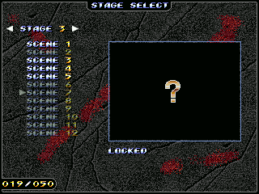

EXTRAS
SELECT STAGE

The game can be started from a specific scene, which you have had to visit first for it to be available.
EXTRAS
ELEGIR ESCENARIO
Se puede comenzar la partida desde un escenario en concreto, pero se debe haber visitado previamente para que esté disponible.
35